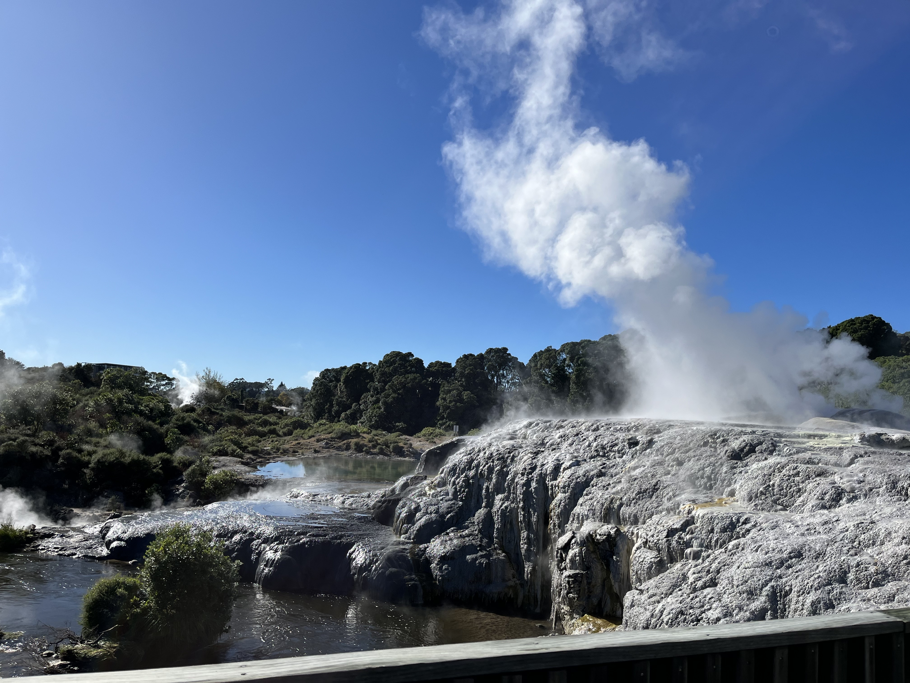

Te Puia

Rotorua's famous geysers and Māori heritage..
Rotorua's famous geysers and Māori heritage make Te Puia a special place that many people love to visit.
Here, you can see the amazing Pohutu Geyser shoot hot water high into the air, along with bubbling mud pools and steam vents. At Te Puia, you can also learn about Māori culture by watching traditional carvings and weaving!